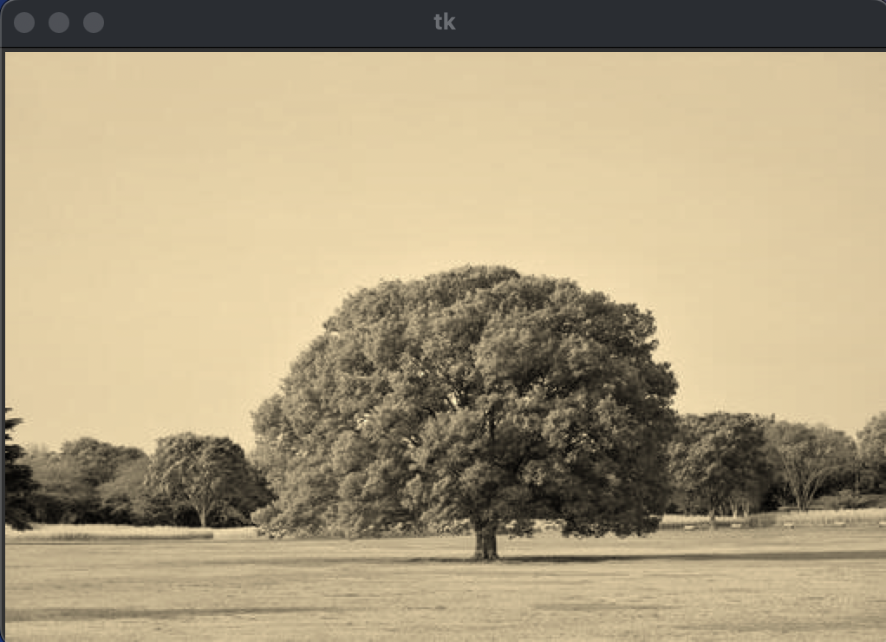
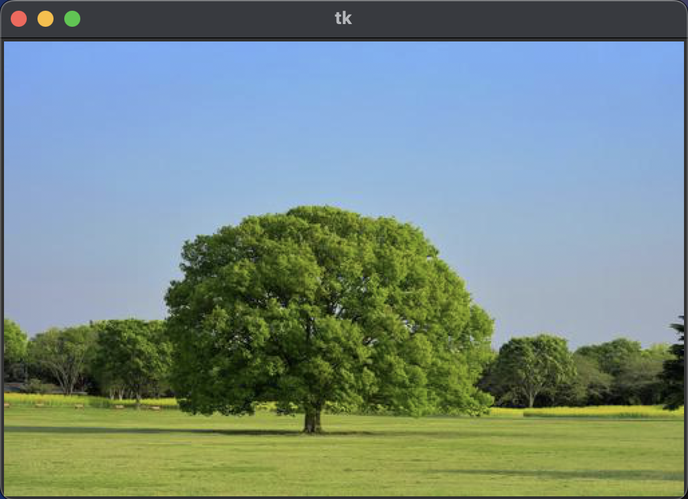

色 (第 3 回)
| 氏名 | 入佐 啓士
|
|---|
| クラス | 理科 1 類 37 組
|
|---|
| 学生証番号 | J4-220897
|
|---|
□課題3.0 - 3.2節 例 1: 光の三原色 additiveColor.py
○プログラムリスト
1 from tkinter import *
2
3 W, H = (600, 600)
4
5
6 def display(canvas):
7
8 radius2 = 180**2
9 centers = ((300.0, 225.0), (213.4, 375.0), (386.6, 375))
10
11 for y in range(H):
12 for x in range(W):
13 color = '#'
14 for i in range(3):
15 dist2 = (x-centers[i][0])**2 + (y-centers[i][1])**2
16 color += "00" if dist2 > radius2 else "ff"
17 canvas.create_rectangle((x, y), (x+1, y+1), outline='', fill=color)
18
19
20 def main():
21 root = Tk()
22 canvas = Canvas(root, width =W, height=H, bg="black")
23 canvas.pack()
24 display(canvas)
25 root.mainloop()
26
27
28 if __name__ == '__main__':
29 main()
○実行コマンド
$ python additiveColor.py
○実行結果
(文字列の表示なし)
○考察
今回は、3つの円の中心からの距離によって各ピクセルのRed, Green, Blueの値を"FF","00"で定めることで、光の三原色(RGB表現)を描画するプログラムを走らせた。
実行結果は上の様に(FF, 00, 00)の部分はRed、(00, FF, FF)の部分はCyanで表示され、すべての色はRed, Green, Blueの各値の組み合わせによって一意に表せることが、視覚的に理解できた。
本プログラムを通して、色は数字によって一意に表され、加算することで新しい色が作れるということは、写真の加工（白黒、セピアなど）もオリジナルの画像の各ピクセルの色の値に数学的な処理を施すことで再現できると考えた。
以下のadvancedのプログラムによって、そのことを確かめたいと思う。
□課題3.0 - 3.2節 例 1-advanced1: 白黒フィルター grayscale.py
○プログラムリスト
1 from tkinter import *
2 from PIL import Image, ImageTk
3 import numpy as np
4
5
6 def grayscale(image):
7 height = len(image)
8 width = len(image[0])
9 for i in range(height):
10 for j in range(width):
11 average = round((image[i][j][0] + image[i][j][1] + image[i][j][2]) / 3.0)
12 image[i][j][0] = average
13 image[i][j][1] = average
14 image[i][j][2] = average
15
16 return image
17
18
19 def display(canvas, image):
20 pil_image = Image.fromarray(np.uint8(image))
21
22 # Tkinterで画像を扱えるようにする
23 tk_image = ImageTk.PhotoImage(pil_image)
24
25 canvas.create_image(0, 0, anchor='nw', image=tk_image)
26 canvas.image = tk_image
27
28
29 def main(image_path):
30 img = Image.open(image_path)
31 image_data = np.array(img)
32
33 root = Tk()
34 canvas = Canvas(root, width=img.width, height=img.height, bg="white")
35 canvas.pack()
36 image_data = grayscale(image_data)
37 display(canvas, image_data)
38 root.mainloop()
39
40
41 if __name__ == '__main__':
42 image_path = "filter_sample.jpg"
43 main(image_path)
○実行コマンド
$ python grayscale.py
○実行結果
(文字列の表示なし)
○考察
例題1の「写真の加工（白黒、セピアなど）もオリジナルの画像の各ピクセルの色の値に数学的な処理を施すことで再現できる」という仮説の検証のため、今回は与えられた画像の各ピクセルの色の値に数学的な処理を施して白黒画像を出力するプログラムを走らせた。
検証前の仮説として、例題1で"
黒(00,00,00)、白(FF,FF,FF)の様に、白黒画像はRGBの値がすべて同じであり、その濃淡によって物体を表していると考えた。濃淡とはRGB値の合計値が大きいもの、すなわち色が濃いものは白に近い色で表されるということである。本プログラムではRGBの合計値の平均を新しいRGB値とすることで、色の濃さを白黒の濃淡で表せる様にした。
実行の結果
上の2枚目の画像の様に白黒で木と認識できる画像が確認できた。ただカメラの白黒写真とは異なり、白黒がはっきりし過ぎていると感じた。実際の白黒写真のプログラムはもっと複雑で黒になり過ぎないように調整していると推測する。
□課題3.0 - 3.2節 例 1-advanced2: セピアフィルター sepia.py
○プログラムリスト
1 from PIL import Image, ImageTk
2 import numpy as np
3 from tkinter import Tk, Canvas
4
5
6 def sepia(image):
7 height, width, _ = image.shape
8 for i in range(height):
9 for j in range(width):
10 original_red = image[i][j][0]
11 original_green = image[i][j][1]
12 original_blue = image[i][j][2]
13
14 # セピアへの変換公式
15 sepia_red = round(.393 * original_red + .769 * original_green + .189 * original_blue)
16 sepia_green = round(.349 * original_red + .686 * original_green + .168 * original_blue)
17 sepia_blue = round(.272 * original_red + .534 * original_green + .131 * original_blue)
18
19 image[i][j][0] = min(255, sepia_red)
20 image[i][j][1] = min(255, sepia_green)
21 image[i][j][2] = min(255, sepia_blue)
22 return image
23
24
25 def display(canvas, image):
26 pil_image = Image.fromarray(np.uint8(image))
27
28 tk_image = ImageTk.PhotoImage(pil_image)
29
30 # canvasの中心に配置するように変更
31 canvas_width = canvas.winfo_reqwidth()
32 canvas_height = canvas.winfo_reqheight()
33 canvas.create_image(canvas_width // 2, canvas_height // 2, anchor='center', image=tk_image)
34
35 canvas.image = tk_image
36
37
38 def main(image_path):
39 img = Image.open(image_path)
40 image_data = np.array(img)
41
42 root = Tk()
43 canvas = Canvas(root, width=img.width, height=img.height, bg="white")
44 canvas.pack()
45 image_data = sepia(image_data)
46 display(canvas, image_data)
47 root.mainloop()
48
49
50 if __name__ == '__main__':
51 image_path = "filter_sample.jpg"
52 main(image_path)
○実行コマンド
$ python sepia.py
○実行結果
(文字列の表示なし)

○考察
今回は、元の画像のRGB値に数学的処理を施して、セピア色のフィルターを施した画像を出力するプログラムを走らせた。
セピア色に変換する数学的処理は15~17行目であり、セピア調を参考にして記述した。処理の内容は、オリジナルのRGB値をx倍(sepia_red,sepia_green,sepia_blueによって異なる)して足し合わせることで、特定の色を強く反映させるというものである。実行の結果は上の様に、日に焼けた大正時代のレトロな写真の様である。
本実験で使用したセピア色への変換処理の各係数を変換させて、色の重みを変化させれば、さまざまなフィルターが作成できると思った。また、写真が日に焼けて変色するのは、太陽光に写真が晒されることで、各ピクセルの吸収する波長が特定値に偏るからだということを本実験のセピアフィルターのプログラムの実行結果を通して考察した。
□課題3.0 - 3.2節 例 1-advanced3: 水平方向反転フィルター reflect.py
○プログラムリスト
1 from PIL import Image, ImageTk
2 import numpy as np
3 from tkinter import Tk, Canvas
4
5
6 def reflect(image):
7 height, width, _ = image.shape
8 for i in range(height):
9 for j in range(width // 2):
10 # 水平方向でピクセルの色指定を入れ替える。
11 image[i][j], image[i][width - 1 - j] = image[i][width - 1 - j].copy(), image[i][j].copy()
12 return image
13
14
15 def display(canvas, image):
16 pil_image = Image.fromarray(np.uint8(image))
17
18 tk_image = ImageTk.PhotoImage(pil_image)
19
20 # canvasの中央に配置する
21 canvas_width = canvas.winfo_reqwidth()
22 canvas_height = canvas.winfo_reqheight()
23 canvas.create_image(canvas_width // 2, canvas_height // 2, anchor='center', image=tk_image)
24
25 canvas.image = tk_image
26
27
28 def main(image_path):
29 img = Image.open(image_path)
30
31 image_data = np.array(img)
32
33 root = Tk()
34 canvas = Canvas(root, width=img.width, height=img.height, bg="white")
35 canvas.pack()
36 image_data = reflect(image_data)
37 display(canvas, image_data)
38 root.mainloop()
39
40
41 if __name__ == '__main__':
42 image_path = "filter_sample.jpg"
43 main(image_path)
○実行コマンド
$ python reflect.py
○実行結果
(文字列の表示なし)

○考察
今回は、左右に線対象の位置にあるピクセルのRGB値を入れ替えることで、水平方向に画像を反転させるプログラムを走らせた。
実行結果は上の様に、画像の色彩は変化せず、水平方向に反転している。11行目で.copy()を使わないと、正しく入れ替えられないので注意が必要だ。
今回のプログラムの様な反転は日常シーンでは使わないようなフィルターだと思われるが、機械学習では大変よく使われる。学習データを左右、上下に反転して4倍にするためだ。以前人工衛星データを用いて画像認識をする際にこの手法を使ったが、その中身のコードを作成することができたので、今度からは自分でモジュールを作ろうと思った。
□課題3.0 - 3.2節 例 1-advanced4: ぼかしフィルター blur.py
○プログラムリスト
1 from PIL import Image, ImageTk
2 import numpy as np
3 from tkinter import Tk, Canvas
4
5
6 def blur(image):
7 height, width, _ = image.shape
8 copy = image.copy()
9 for i in range(height):
10 for j in range(width):
11 for color in range(3): # ピクセルの周囲3*3のグリッドの色の平均値により、新しい色を定義する
12 sum_color = 0
13 count_color = 0
14 for k in range(-1, 2):
15 for l in range(-1, 2):
16 if 0 <= i + k < height and 0 <= j + l < width:
17 count_color += 1
18 sum_color += copy[i + k][j + l][color]
19 image[i][j][color] = round(sum_color / count_color)
20 return image
21
22
23 def display(canvas, image):
24 pil_image = Image.fromarray(np.uint8(image))
25
26 tk_image = ImageTk.PhotoImage(pil_image)
27
28 # canvasの中央に配置
29 canvas_width = canvas.winfo_reqwidth()
30 canvas_height = canvas.winfo_reqheight()
31 canvas.create_image(canvas_width // 2, canvas_height // 2, anchor='center', image=tk_image)
32
33 canvas.image = tk_image
34
35
36 def main(image_path):
37 img = Image.open(image_path)
38
39 image_data = np.array(img)
40
41 root = Tk()
42 canvas = Canvas(root, width=img.width, height=img.height, bg="white")
43 canvas.pack()
44 image_data = blur(image_data)
45 display(canvas, image_data)
46 root.mainloop()
47
48
49 if __name__ == '__main__':
50 image_path = "filter_sample.jpg"
51 main(image_path)
○実行コマンド
$ python blur.py
○実行結果
(文字列の表示なし)
○考察
今回は、各ピクセルの周囲3*3のグリッドのRGB値の平均値を出すことで元の画像をぼかしたものを出力するプログラムを走らせた。
本プログラムを作成する前に、"ぼかし"とは周りとの境界線が曖昧である状態なので、周囲のピクセルとの境界を目立たなくする処理が必要だと考えた。女性がメイクをする際にポンポンと手で馴染ませることから、各ピクセルの周囲のグリッドの平均値を出せば、隣あうピクセルとのRGB値の差は小さくなると考え、今回のプログラムを作成した。特に注意が必要だった点は画像の端のピクセルのぼかしで、グリッドの範囲に含まれるピクセルの数で平均値を出すことで対処した。
今回のプログラムの実行結果を見ると、確かにボケているがまだ正しく認識はできる状態だ。今回は3*3のグリッドでぼかしの処理を行ったが、このグリッドのサイズを大きくしたらさらにボケた画像が作成できると考察する。
□課題3.0 - 3.2節 例 2: 色相円 colorRingRGB.py
○プログラムリスト
1 from tkinter import *
2 import circle
3
4
5 def f2hex(x):
6 return '{:02X}'.format(int(x*0xff))
7
8
9 def string(r, g, b):
10 return '#' + f2hex(r) + f2hex(g) + f2hex(b)
11
12
13 def color(n, i):
14 oneSixth, twoSixth, threeSixth, fourSixth, fiveSixth, six = (1.0/6.0, 2.0/6.0, 3.0/6.0, 4.0/6.0, 5.0/6.0, 6.0)
15 ratio = i/n
16 if ratio <= oneSixth:
17 return string(1.0, ratio*six, 0.0)
18 elif ratio <= twoSixth:
19 return string((twoSixth-ratio)*six, 1.0, 0.0)
20 elif ratio <= threeSixth:
21 return string(0.0, 1.0, (ratio-twoSixth)*six)
22 elif ratio <= fourSixth:
23 return string(0.0, (fourSixth-ratio)*six, 1.0)
24 elif ratio <= fiveSixth:
25 return string((ratio-fourSixth)*six, 0.0, 1.0)
26 else:
27 return string(1.0, 0.0, (1.0-ratio)*six)
28
29
30 def display(canvas, points):
31 for i in range(len(points)):
32 j = (i+1) % len(points)
33 canvas.create_line(points[i], points[j], fill=color(len(points), i))
34
35
36 def main():
37 root = Tk()
38 canvas = Canvas(root, width=circle.W, height=circle.H, bg='black')
39 canvas.pack()
40 points = circle.circle()
41 display(canvas, points)
42 root.mainloop()
43
44
45 if __name__ == '__main__':
46 main()
○実行コマンド
$ python colorRingRGB.py 64
○実行結果
(文字列の表示なし)
○考察
今回は、円全体を6つの区間に区切って、徐々に色を変えた円を描画するプログラムを走らせた。
6行目の'{:02X}'.format(int(x*0xff))について、0xffは16進数で255を表し、つまりこの処理は浮動小数点を0から255の範囲の16進数の文字列にして返す処理を表す。これによって、各点の全体の比率によって徐々にRGB値が変化して結果的に上の様にグラデーションの円が出来上がるのである。
プログラムを実行してみて、やはり円上を分割する作業が冗長で大変だった。これはRGBの3変数によって色を表すから起こることであり、色相により色変化を表すHSV表現の便利さが理解できた。
□課題3.0 - 3.2節 例 3: HSV表現と色円盤 colorDisk.py
○プログラムリスト
1 from tkinter import *
2 import math
3 import colorsys
4 import circle
5 from colorRingRGB import string
6
7
8 def display(canvas):
9 center = (circle.W // 2, circle.H // 2)
10 radius = circle.R
11
12 for y in range(circle.H):
13 for x in range(circle.W):
14 dx = x - center[0]
15 dy = y - center[1]
16
17 h = math.atan2(dy, dx) / (2 * math.pi)
18 h = h if h >= 0.0 else h + 1.0
19
20 s = (dx**2 + dy**2)**0.5 / radius
21 v = 0.0 if s > 1.0 else 1.0
22 s = 0.0 if s > 1.0 else s
23
24 r, g, b = colorsys.hsv_to_rgb(h, s, v)
25 color = string(r, g, b)
26
27 canvas.create_rectangle((x, y), (x + 1, y + 1), outline='', fill=color)
28
29
30 def main():
31 root = Tk()
32 canvas = Canvas(root, width=circle.W, height=circle.H, bg='black')
33 canvas.pack()
34 display(canvas)
35 root.mainloop()
36
37
38 if __name__ == '__main__':
39 main()
○実行コマンド
$ python colorDisk.py
○実行結果
(文字列の表示なし)
○考察
今回は、HSV表現を用いて、円の中心に近づくに従って彩度が落ちるグラデーションの色円盤を描画するプログラムを走らせた。
このプログラムは色相を[0, 1]の範囲で中心角を元に定めて、彩度を中心からの近さによって定めた。実行結果は上のようで、中心から放射状に白い線が伸びているおり、CDの裏側のような見た目であった。中心に近づくにつれ色と色の境界が曖昧になっているのは、彩度が低くなるにつれ、各色の主張がなくなっていくからである。
このプログラムを通して、初めて色の鮮やかさの変化を感じることができた。疑問に思った点は、なぜ放射状に伸びる3つの白い線が見えるのかということだ。中心からの距離によって彩度は定まるので放射状に白い線が続いているのはありえないと思うが、この現象は、RGBの境界線は色の変化が大きく、ぼんやりとした放射状の3本の境界線が見え、中心の白の主張が強いため、3本とも視覚的な作用で白に見えるからだと推測する。
□課題3.0 - 章末問題 例 1 : 色の3原色(減法混色/CMY表現) subtractiveColor.py
○プログラムリスト
1 from tkinter import *
2
3 W, H = (600, 600)
4
5 """
6 色のRGB表現とCMY表現
7 | 色 | Color | (R G B) | (C M Y) |
8 | 赤 | Red | (1 0 0) | (0 1 1) |
9 ...
10
11 のように、(R G B) = (1 1 1) - (C M Y) の関係式で表される。
12 """
13 def display(canvas):
14
15 radius2 = 180**2
16 centers = ((300.0, 225.0), (213.4, 375.0), (386.6, 375))
17
18 for y in range(H):
19 for x in range(W):
20 color = '#'
21 for i in range(3):
22 dist2 = (x-centers[i][0])**2 + (y-centers[i][1])**2
23 # CMY表現の場合はffと00を逆に設定すれば、変換できる
24 color += "ff" if dist2 > radius2 else "00"
25 canvas.create_rectangle((x, y), (x+1, y+1), outline='', fill=color)
26
27
28 def main():
29 root = Tk()
30 canvas = Canvas(root, width =W, height=H, bg="black")
31 canvas.pack()
32 display(canvas)
33 root.mainloop()
34
35
36 if __name__ == '__main__':
37 main()
○実行コマンド
$ python subtractiveColor.py
○実行結果
(文字列の表示なし)
○考察
今回は、3つの円の中心からの距離を用いて、色の3原色を描画するプログラムを走らせた。
実行結果は上の様で、光の三原色と違う点はシアン、マゼンタ、イエロー(CMY)というRGBを足し合わせることでできる色が3つの円のベースの色となっており、3つの円の①重なり・②外側の色が①黒・②白とRGBの時と逆になっている点だ。これはCMY表現は(C, M, Y) = (1, 1, 1) - (R, G, B)の関係式が成り立つからであり、CMYから色が抜けていくと、足し合わさる前の色が見えるという理解だとわかりやすい。
実行を終えてみて疑問に思ったのはなぜRGB、CMY二つの表現方法があるのかということだ。RGBは光の3原色であり、光によって画像を映し出すディスプレイに使われており、CMYは色によって画像を表現する印刷機に使われていることを学んだ。
□課題3.0 - 章末問題 例 2 : HSV表現を用いた色相円 colorRingHSV.py
○プログラムリスト
1 from tkinter import *
2 import circle
3 import colorsys
4
5
6 def f2hex(x):
7 return '{:02X}'.format(int(x*0xff))
8
9
10 def string(r, g, b):
11 return '#' + f2hex(r) + f2hex(g) + f2hex(b)
12
13
14 def color(n, i):
15 hue = i / n
16 saturation = 1.0
17 value = 1.0
18 r, g, b = colorsys.hsv_to_rgb(hue, saturation, value)
19 return string(r, g, b)
20
21
22 def display(canvas, points):
23 for i in range(len(points)):
24 j = (i+1) % len(points)
25 canvas.create_line(points[i], points[j], fill=color(len(points), i))
26
27
28 def main():
29 root = Tk()
30 canvas = Canvas(root, width=circle.W, height=circle.H, bg='black')
31 canvas.pack()
32 points = circle.circle()
33 display(canvas, points)
34 root.mainloop()
35
36
37 if __name__ == '__main__':
38 main()
○実行コマンド
$ python colorRingHSV.py 64
○実行結果
(文字列の表示なし)
○考察
今回は、HSV表現を用いて、色相の変化により色相円を簡単に描画するプログラムを走らせた。
例題2のプログラムで感じた円全体を6つの区間に区切ってRGB値を定めなくてはならない冗長さ、面倒臭さを解決するためのプログラムだ。HSV表現では色相(Hue)でのみ色の変化を表すので、変数が一つしかなく非常に関数の処理が書きやすい。color関数ではSVを固定してHだけを円周の点の位置に応じて徐々に変化させた。その結果上の様に例題2のプログラムの実行結果と変わらない色相円が得られた。
今回のプログラムを実行して、HSV表現の式としての扱いやすさを体験できた。colorsysのhsv_to_rgbモジュールでRGBに変換していることから、HSV表現はRGB値を扱いやすくするためのツールであることがわかる。hsv_to_rgbモジュールではHSV表現の色相の浮動小数点を16進法の2桁の値に変換するという結局は例題2のcolor関数の様な処理をしているのだと推測できる。
□課題3.0 - 章末問題 例 3 : 明度を変化させた色円盤 colorDiskDark.py
○プログラムリスト
1 from tkinter import *
2 import math
3 import colorsys
4 import circle
5 from colorRingRGB import string
6
7 """
8 ・色相(Hue) ・彩度(Saturation) ・明度(Value)
9 例題3では内側に向かって彩度(S)が落ちていき、中心で白色になっていたのに対して、本プログラムでは、内側に向かって明度(V)が落ちていき、中心で黒色になるプログラムに変更する。
10 """
11
12
13 def display(canvas):
14 center = (circle.W // 2, circle.H // 2)
15 radius = circle.R
16
17 for y in range(circle.H):
18 for x in range(circle.W):
19 dx = x - center[0]
20 dy = y - center[1]
21
22 # 原点からの角度をラジアンで表し、それを2πで割り、0から1の範囲で色相を表す。
23 h = math.atan2(dy, dx) / (2 * math.pi)
24 h = h if h >= 0.0 else h + 1.0
25
26 v = (dx**2 + dy**2)**0.5 / radius
27 s = 0.0 if v > 1.0 else 1.0
28 v = 0.0 if v > 1.0 else v
29
30 r, g, b = colorsys.hsv_to_rgb(h, s, v)
31 color = string(r, g, b)
32
33 canvas.create_rectangle((x, y), (x + 1, y + 1), outline='', fill=color)
34
35
36 def main():
37 root = Tk()
38 canvas = Canvas(root, width=circle.W, height=circle.H, bg='black')
39 canvas.pack()
40 display(canvas)
41 root.mainloop()
42
43
44 if __name__ == '__main__':
45 main()
○実行コマンド
$ python colorDiskDark.py
○実行結果
(文字列の表示なし)
○考察
今回は、内側に向かって明度が落ちていき中心で黒色になるグラデーションの色円盤のプログラムを走らせた。
HSV表現では色相という変数の他に彩度、明度の二つの変数があり、今回は明度を変更するプログラムである。実行結果は上の通りで、中心に向けて黒くなっている。
彩度を下げた場合は白色に、明度を下げた場合は黒色になったことから、hsv_to_rgbモジュールの処理はSが小さくなれば(1,1,1)よりにVが小さくなれば(0,0,0)よりに変換していると推測できる。つまりHSV表現とはRGBという3変数を実世界でイメージしやすいHSVの3変数に置換して色の変化を想像しやすくするためのツールなのだと考えた。
□課題や授業に関して
○レポート作成に要した時間
5時間
○特に苦労した点
画像の各ピクセルのRGB値を数式で扱いやすい形に変更する方法に至るまでが大変でした。また画像フィルターのプログラムは最初の方は配列の中の配列を考えなくてはならず、入り組んでいたので理解するのに時間がかかりました。
○授業についての感想や希望
例題3問ほどでちょうど良い分量でした。章末問題は今回だけかもしれませんが、少し難易度に物足りなさを感じました。あと1問は発展レベルの問題があってもいいと思いました。